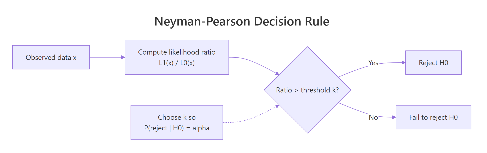

Neyman-Pearson Lemma in R: Most Powerful Tests & UMP Explained
The Neyman-Pearson Lemma proves that the likelihood ratio test is the most powerful way to decide between two simple hypotheses: for any fixed Type I error rate, no other test catches a true alternative more often.
What does the Neyman-Pearson Lemma actually say?
Two tests can control the same Type I error rate and still disagree on the truth. The lemma names the single test that catches a true alternative most often. Below we pit the Neyman-Pearson (NP) test against a reasonable-looking competitor, both calibrated to the same alpha, and measure how often each one correctly rejects a false null.
The setup: samples of size 20 from either $H_0: X \sim N(0, 1)$ or $H_1: X \sim N(0.5, 1)$, with $\alpha = 0.05$. The NP test rejects when the sample sum is large. The competitor rejects when the sample maximum is large. Both are valid level-0.05 tests. Only one is optimal.
The NP test catches the true alternative about 72% of the time. The max test, calibrated to the same 5% error rate, catches it only 19% of the time. That is nearly a four-fold difference in power for the same error budget. The lemma guarantees this gap: no level-$\alpha$ test for this pair of hypotheses can beat the NP test's power.
Try it: Lower the effect size to mu1 = 0.3 and re-measure both powers. The gap shrinks because both tests struggle to detect a smaller shift, but the NP test still wins.
Click to reveal solution
Explanation: Smaller effect sizes drag both powers down, but the NP test stays ahead because it pools information across all 20 observations through the sum. The max test only uses one of them.
How do we build the Neyman-Pearson test step by step?
Knowing the lemma exists is one thing. Constructing the actual test for your problem is another. The recipe has three steps, and every step has a concrete computation behind it.

Figure 1: The Neyman-Pearson decision rule: compute the likelihood ratio, compare to a threshold chosen to control Type I error, and reject when the ratio is large.
The recipe is:
- Write the likelihood ratio. Compute $\Lambda(x) = L_1(x) / L_0(x)$, the ratio of the likelihood under $H_1$ to the likelihood under $H_0$.
- Pick a threshold $k$. Choose $k$ so that $P(\Lambda(X) > k \mid H_0) = \alpha$.
- Reject when the ratio exceeds $k$. This is provably the most powerful level-$\alpha$ test.
Let's apply this to the Normal example. With $n$ iid samples from $N(\mu, 1)$, the likelihood ratio for $\mu_0 = 0$ vs $\mu_1 = 0.5$ is:
$$\Lambda(x) = \frac{\prod_i \phi(x_i - 0.5)}{\prod_i \phi(x_i)} = \exp\left(0.5 \sum_i x_i - n \cdot 0.5^2 / 2\right)$$
The ratio is monotonically increasing in $\sum_i x_i$, so "reject when $\Lambda > k$" is equivalent to "reject when $\sum_i x_i > k'$" for some $k'$. That is exactly the test we used in Section 1.
The empirical Type I error is 4.97%, essentially exactly the 5% target. The closed-form critical value 7.35 is the threshold that gives the test its level. Anything more extreme than that, under $H_0$, happens 5% of the time by chance.
Try it: Build the likelihood ratio for a Bernoulli problem. Suppose $X_1, \ldots, X_n$ are iid Bernoulli with $H_0: p = 0.3$ and $H_1: p = 0.6$. Write the LR as a function of $S = \sum_i X_i$.
Click to reveal solution
Explanation: The Bernoulli LR is monotonically increasing in $S$, so the NP test reduces to "reject when $S$ is large." This is exactly what binom.test does under the hood.
What is a UMP test, and when does one exist?
The lemma in its purest form needs simple hypotheses. Real practice is full of composite alternatives like $\mu > 0$. A test that is most powerful at every $\mu$ in the alternative is called uniformly most powerful (UMP). When does a UMP test exist?

Figure 2: When a uniformly most powerful (UMP) test exists. Simple vs simple gives the NP test; one-sided composite under monotone likelihood ratio gives the Karlin-Rubin UMP test; two-sided composite has no UMP.
The Karlin-Rubin theorem gives the answer. If the family of distributions has a monotone likelihood ratio (MLR) in some statistic $T(X)$, and the alternative is one-sided, then the test "reject when $T(X) > c$" is UMP. The Normal-with-known-variance, Exponential, Binomial, and Poisson families all have MLR in their natural sufficient statistics, so each has a UMP one-sided test.
Concretely: for $N(\mu, 1)$ with $H_0: \mu \le 0$ vs $H_1: \mu > 0$, the same $\sum_i X_i$ critical-value rule from Section 2 is UMP. We can demonstrate this by sweeping $\mu$ across the alternative and confirming that the NP rule dominates the max test at every value.
The NP rule dominates at every $\mu$ in the table, even at $\mu = 1.5$ where both tests are nearly saturated. This is exactly what UMP means: the same test wins across the entire alternative, not just at one specific point.
Try it: For an iid Exponential($\lambda$) sample, the joint density is $\lambda^n \exp(-\lambda \sum_i x_i)$. Which statistic gives MLR (and therefore the basis of a UMP one-sided test on $\lambda$)?
Click to reveal solution
Explanation: The likelihood ratio for $\lambda_1 < \lambda_0$ is monotonic in $-\sum_i x_i$, equivalently monotonic in $\sum_i x_i$ with the inequality reversed. So $\sum_i x_i$ (or equivalently the sample mean) is the MLR statistic. A UMP test for $H_0: \lambda \ge \lambda_0$ vs $H_1: \lambda < \lambda_0$ rejects when $\sum_i x_i$ is large.
Why do two-sided tests have no UMP?
The Karlin-Rubin guarantee evaporates when the alternative is two-sided. Intuitively, a test optimised to detect $\mu > 0$ throws away information about $\mu < 0$, and vice versa. No single test can be best at both jobs. The two-sided z-test is a compromise, not an optimum.
The simulation makes the trade-off concrete. We compare the one-sided NP test for $\mu > 0$ against a symmetric two-sided z-test, both at $\alpha = 0.05$, across $\mu \in \{-1, -0.5, 0, 0.5, 1\}$.
The one-sided NP test wins on the right (at $\mu = 0.5$, 72% vs 60%) and is essentially blind on the left (at $\mu = -1$, 0% vs 99%). The two-sided test trades right-side power for left-side coverage. There is no test that beats both at every point, so no UMP exists.
Try it: Replace mu_range with a finer grid from -1 to 1 and find the $\mu$ where the two curves cross. That crossover marks where the trade-off flips.
Click to reveal solution
Explanation: Around $\mu = 0.2$, the one-sided test becomes more powerful than the two-sided test on the right tail. To the right of that point, one-sided wins; to the left of zero, two-sided wins. The crossover is the price of giving up the other direction.
How does R's built-in machinery relate to NP optimality?
Most of the time you will not implement an NP test from scratch, you will call t.test, binom.test, or prop.test. These are not separate constructions. They are the same likelihood ratio reasoning, polished into a function.
For an iid Normal sample with known variance, t.test(x, mu = 0, alternative = "greater") rejects $H_0: \mu \le 0$ when the standardised mean is large, which is exactly the Karlin-Rubin UMP test from Section 3 (with the variance estimated rather than known). On the same data, the manual rule and the built-in function should agree.
Both rules reject $H_0$ on this sample. The manual rule uses the analytical critical value 7.35; t.test returns a p-value of 0.014 (below 0.05). Different presentation, same decision, same underlying NP construction.
stats (t-test, F-test, chi-squared, binomial, proportions) are all likelihood ratio tests or asymptotic likelihood ratio tests. Knowing the NP framework lets you read the optimality story behind every familiar tool.Try it: Mirror the NP test for Bernoulli with binom.test. Generate 20 Bernoulli draws with $p = 0.6$ and test $H_0: p \le 0.3$ vs $H_1: p > 0.3$ at $\alpha = 0.05$.
Click to reveal solution
Explanation: binom.test rejects when $S$ is large enough that the one-sided p-value falls below $\alpha$. That is the Karlin-Rubin UMP test for the Bernoulli MLR family, expressed as a p-value instead of a critical value.
Practice Exercises
Each capstone combines several pieces of the lemma. Use distinct variable names (prefixed my_) so your work does not overwrite the tutorial code above.
Exercise 1: Calibrate sample size for a target power
Find the smallest sample size my_n_required such that the one-sided NP test for $N(0, 1)$ vs $N(0.3, 1)$ at $\alpha = 0.05$ achieves power at least 0.80. Use the closed-form Z-formula.
Click to reveal solution
Explanation: For the one-sided z-test the required sample size is $n = ((z_\alpha + z_\beta) / \delta)^2$. Plugging $\delta = 0.3$, $\alpha = 0.05$, power $= 0.80$ gives $n \approx 68.1$, rounded up to 69.
Exercise 2: NP test beyond Normal, the Exponential case
Build the NP test for iid Exponential samples with $H_0: \lambda = 1$ vs $H_1: \lambda = 2$, sample size $n = 15$, $\alpha = 0.05$. Under $H_0$, $\sum_i X_i \sim \text{Gamma}(n, \text{rate} = 1)$. Under $H_1$, $\sum_i X_i \sim \text{Gamma}(n, \text{rate} = 2)$. The LR is monotonically decreasing in the sum, so we reject for small values. Find the critical value my_exp_crit and verify the achieved power my_exp_power by simulation.
Click to reveal solution
Explanation: The LR is monotonically decreasing in $\sum_i x_i$, so the NP test rejects when the sum is small. We pick the lower 5% quantile of the $H_0$ Gamma distribution as the critical value, then simulate under $H_1$ to confirm the test detects the rate change in 93% of samples.
Exercise 3: Visualise the one-sided / two-sided crossover
Build power curves for the one-sided NP test (rejects when $\sum > c_{\text{NP}}$) and the symmetric two-sided z-test across $\mu \in \{-1, -0.75, -0.5, \ldots, 1\}$. Identify the negative-$\mu$ region where the two-sided test wins by a factor of at least 5.
Click to reveal solution
Explanation: For every negative $\mu$ in the grid, the two-sided test's power dwarfs the one-sided test's by orders of magnitude. The one-sided NP test is "blind" on the wrong side because its rejection region lies entirely in the upper tail. This is the operational meaning of "no UMP exists for two-sided alternatives."
Complete Example: A reusable NP framework in R
We will fold the recipe into a small function and apply it to a manufacturing-style problem. A supplier claims their components have defect counts $\sim N(50, 5^2)$. We suspect the true mean has drifted to 55. We collect a sample of 30 measurements and want a level-0.05 test with quantified power against the suspected alternative.
The function reports a critical value of 1545 on the sample sum, an observed sample sum of 1660, and a rejection. The power against the suspected alternative (mean shift from 50 to 55) is essentially 1, a 5-unit shift over 30 observations is an enormous signal. Had we collected only 5 observations, the same calculation would have shown power around 0.81, which is why sample size matters as much as effect size.
Summary
| Result | What it says | When it applies |
|---|---|---|
| Neyman-Pearson Lemma | The likelihood ratio test is the most powerful level-$\alpha$ test. | Both hypotheses are simple (single distribution). |
| Karlin-Rubin theorem | The one-sided LR test on the MLR statistic is uniformly most powerful (UMP). | One-parameter family with monotone likelihood ratio + one-sided alternative. |
| Two-sided non-existence | No UMP test exists in general. | Two-sided composite alternatives. |
| LRT in R | t.test, binom.test, prop.test, etc. are LRTs. |
Standard parametric inference in stats package. |
| Practical workflow | Fix $\alpha$ first, design the LR-based rejection region, then optimise power by sample size. | Any hypothesis-testing problem. |
References
- Casella, G. & Berger, R., Statistical Inference, 2nd Edition. Duxbury (2002), Chapter 8. Link
- Lehmann, E. L. & Romano, J. P., Testing Statistical Hypotheses, 4th Edition. Springer (2022). Link
- Neyman, J. & Pearson, E. S. (1933), On the Problem of the Most Efficient Tests of Statistical Hypotheses. Philosophical Transactions of the Royal Society A, 231: 289-337. Link
- Karlin, S. & Rubin, H. (1956), The Theory of Decision Procedures for Distributions with Monotone Likelihood Ratio. Annals of Mathematical Statistics, 27(2): 272-299. Link
- Wasserman, L., All of Statistics, Chapter 10. Springer (2004). Link
- R documentation,
stats::t.test. Link - R documentation,
stats::binom.test. Link - StatLect, Neyman-Pearson Lemma. Link
Continue Learning
- Hypothesis Testing in R, the parent post that sets up null and alternative hypotheses, p-values, and the decision framework that the lemma optimises.
- Type I and Type II Errors in R, a deeper look at the error-rate trade-off the lemma fixes alpha to control.
- Power Analysis in R, how to translate the lemma's power guarantee into sample-size and effect-size calculations for real designs.